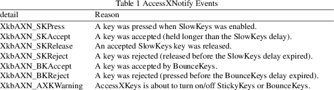
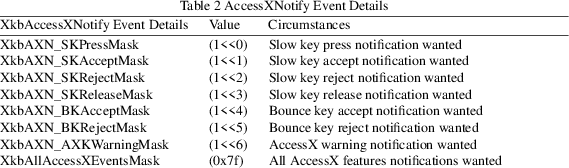

XkbGetSlowKeysDelay − Gets the SlowKeys acceptance delay for a keyboard device
|
Bool XkbGetSlowKeysDelay |
(Display *display, unsigned int device_spec, |
unsigned int *delay_rtrn);
display
connection to X server
device_spec
device ID, or XkbUseCoreKbd
delay_rtrn
backfilled with SlowKeys delay, ms
Some users may accidentally bump keys while moving a hand or typing stick toward the key they want. Usually, the keys that are accidentally bumped are just hit for a very short period of time. The SlowKeys control helps filter these accidental bumps by telling the server to wait a specified period, called the SlowKeys acceptance delay, before delivering key events. If the key is released before this period elapses, no key events are generated. Users can then bump any number of keys on their way to the one they want without accidentally getting those characters. Once they have reached the key they want, they can then hold the desired key long enough for the computer to accept it. SlowKeys is a boolean control with one configurable attribute.
When the SlowKeys control is active, the server reports the initial key press, subsequent acceptance or rejection, and release of any key to interested clients by sending an appropriate AccessXNotify event (see section 10.6.4).
The server can generate XkbAccessXNotify events for some of the global keyboard controls. The detail field describes what AccessX event just occurred and can be any of the values in Table 1. The server can generate XkbAccessXNotify events for some of the global keyboard controls. The detail field describes what AccessX event just occurred and can be any of the values in Table 1.

The keycode field reports the keycode of the key for which the event occurred. If the action is related to SlowKeys, the slowKeysDelay field contains the current SlowKeys acceptance delay. If the action is related to BounceKeys, the debounceDelay field contains the current BounceKeys debounce delay.
Selecting for AccessX Events
To receive XkbAccessXNotify events under all possible conditions, use XkbSelectEvents and pass XkbAccesXNotifyMask in both bits_to_change and values_for_bits.
To receive XkbStateNotify events only under certain conditions, use XkbSelectEventDetails using XkbAccessXNotify as the event_type and specifying the desired state changes in bits_to_change and values_for_bits using mask bits from Table 2.

XkbGetSlowKeysDelay requests the attributes of the SlowKeys control from the server, waits for a reply and backfills delay_rtrn with the SlowKeys delay attribute. XkbGetSlowKeysDelay returns True if successful; , XkbGetSlowKeysDelay returns False.
|
True |
The XkbGetSlowKeysDelay function returns True if the request of the Slowkeys control from the server was successful. | ||
|
False |
The XkbGetSlowKeysDelay function returns False if a compatible version of the Xkb extension is not available in the server. |
The structure for the XkbAccessXNotify event type is as follows:
typedef struct
{
int type; /* Xkb extension base event code */
unsigned long serial; /* X server serial number for event */
Bool send_event; /* True => synthetically generated */
Display * display; /* server connection where event
generated */
Time time; /* server time when event generated */
int xkb_type; /* XkbAccessXNotify */
int device; /* Xkb device ID, will not be XkbUseCoreKbd */
int detail; /* XkbAXN_* */
KeyCode keycode; /* key of event */
int slowKeysDelay; /* current SlowKeys delay */
int debounceDelay; /* current debounce delay */
} XkbAccessXNotifyEvent;